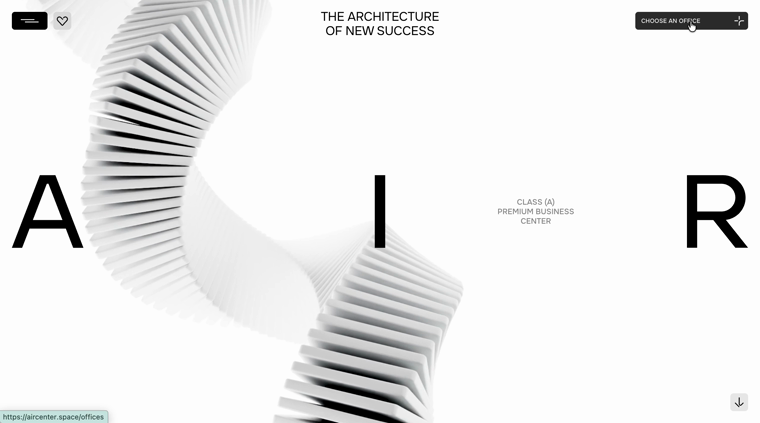
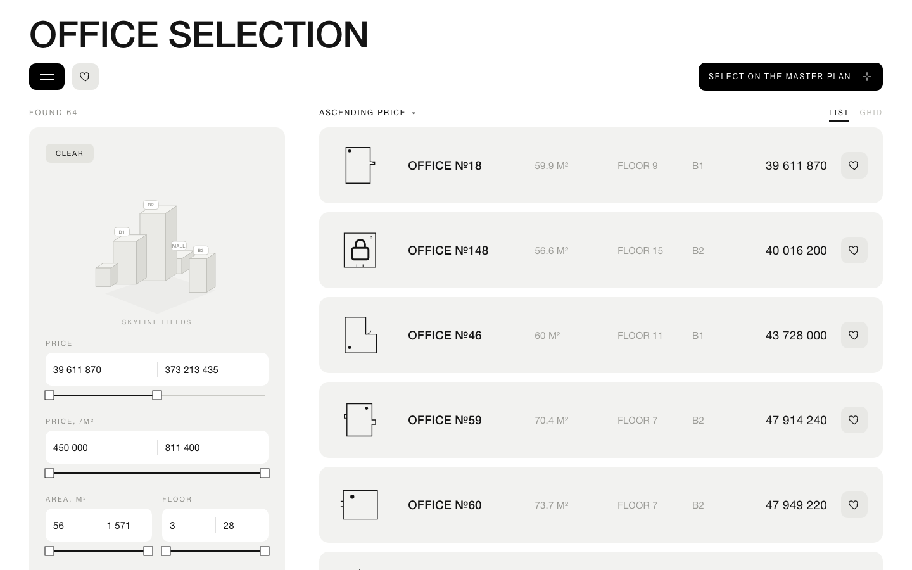
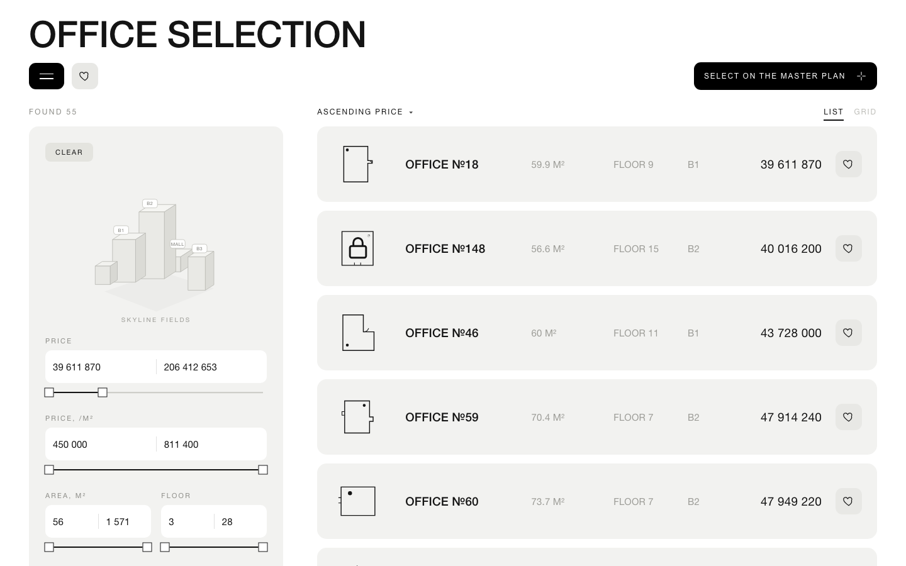
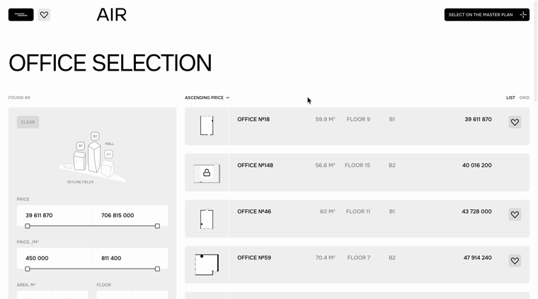
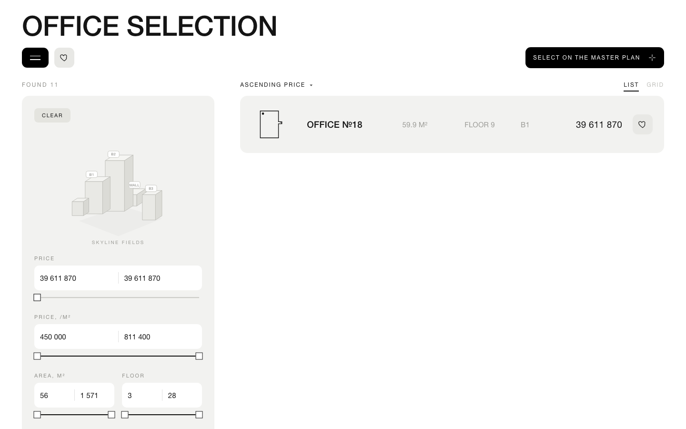
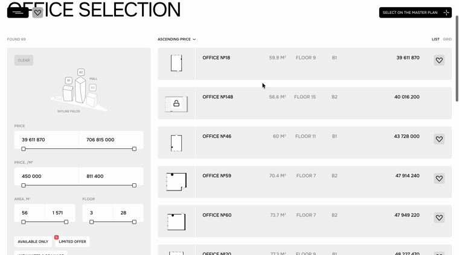

No text collision. Composition/tempo 1-в-1 must still be CONFIRMED BY EYE against the live board.
| phase | OURS | LIVE (springs) | text-collision |
|---|---|---|---|
| p=0 |  |
ok | |
| p=0.25 | ok | ||
| p=0.5 |  |
ok | |
| p=0.75 |  |
 |
ok |
| p=1 |  |
 |
ok |